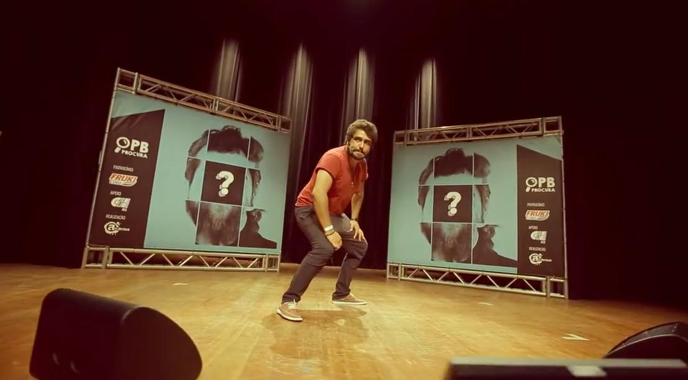
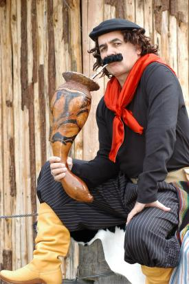

UM NOVO TALENTO DO
HUMOR GAÚCHO
Após mais de 10 anos, o PB Procura está de volta, agora com um novo desafio: encontrar o novo nome do humor gaúcho.
O projeto multiplataforma conta com episódios semanais na ATL TV, mídia on air, redes sociais e plataformas digitais da rádio. E a jornada termina em uma grande final ao vivo, com premiação e plateia — tudo isso registrado na ATL TV.

Os participantes enviam um vídeo de até 3 minutos: além de se apresentar, precisam fazer os jurados rirem. Integrantes do Pretinho Básico, ao lado de um convidado especial, assistem às produções pré-selecionadas e escolhem os 10 comediantes que avançam — em formato reaction, opinando sobre cada performance.
Os classificados encaram desafios inéditos, escritos sob medida para as habilidades de cada concorrente. A cada episódio, participantes são eliminados até restarem 5 finalistas.
Os 5 finalistas se apresentam ao vivo, num teatro com plateia, convidados especiais e o elenco da Atlântida. O resultado combina voto dos jurados, voto popular e voto do elenco ATL — tudo transmitido ao vivo pela ATL TV.
O Pretinho Básico sabe como ninguém o que é procurar um novo talento: foi assim que o próprio grupo se formou, em 2015. Agora, ao lado da ATL TV (Rede Atlântida), o PB usa essa experiência para revelar o próximo grande nome da comédia gaúcha — fortalecendo a ATL TV como referência em entretenimento original e gerando conteúdo para streaming e redes sociais.

Não perca nenhum episódio do PB Procura.
Ver grade de exibição